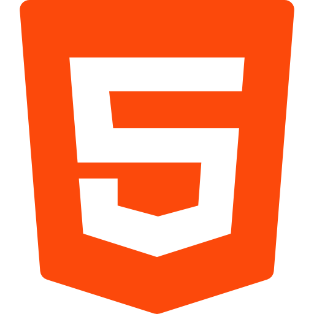
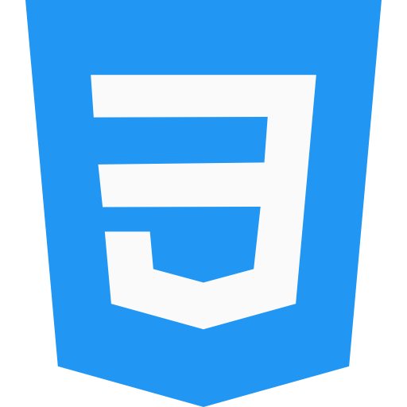
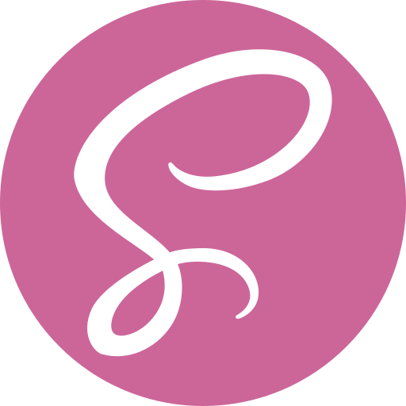
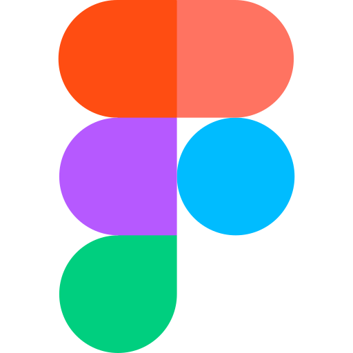
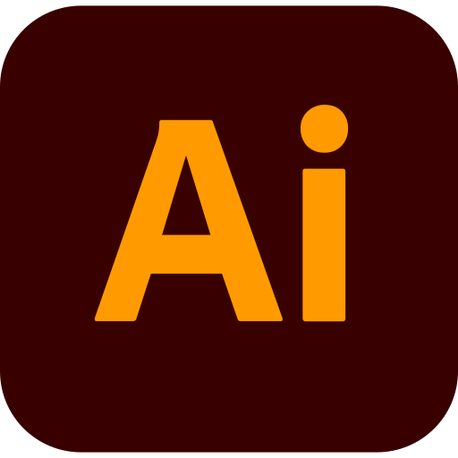
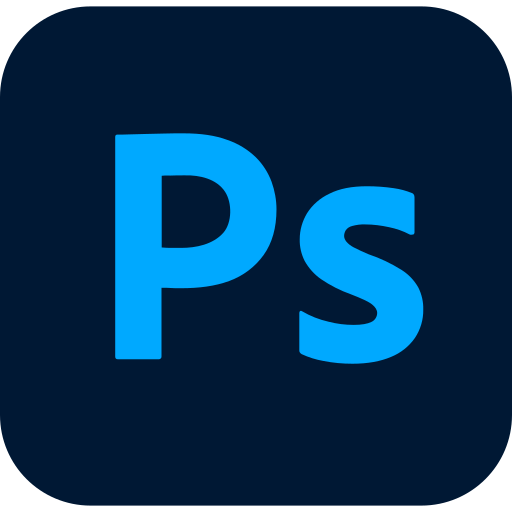

Compétences
- 
- 
- 
- 
- 
- 
- Notions en Scss
- Notions en Wordpress
- Connaissance de base d'Illustrator et de Photoshop
- Connaissances de base en assurance qualité web (performance web, référencement SEO et accessibilité notamment)
MOOCs
- Openclassrooms
- Créez un site moderne et professionnel avec WordPress 5 (en cours)
- Simplifiez-vous le CSS avec Sass (en cours)
- Créez des animations CSS modernes (en cours)
- Créez votre site web avec HTML5 et CSS3
- Créez une maquette web avec Figma
- Appliquez la psychologie au design
- Comprendre le web
- Google Career Certificates et Opquast
- Certificat Google UX Design (en cours : fin estimée en juin 2024)
- Module de découverte Opquast
Formations
-
Titre professionnel Développeur web (en cours)
CESI Rouen
/ Depuis octobre 2023 jusqu'à septembre 2025
Option Fullstack (niveau bac +2)
- Bloc 1 validé
-
Bloc 2

-
Bloc 3
-
Bloc 4
- Master 1 de psychologie clinique et psychopathologie (niveau) Université de Rouen / 2010 - 2012
- Licence de psychologie, option psychologie clinique Université de Rouen / 2007 - 2010
- Premier Cycle d'Etudes de Médecine, 1ère année Université de Rouen / 2005 - 2007
- Baccalauréat Scientifique option Mathématiques Lycée François 1er (Le Havre) / 2002 - 2005
Expériences professionnelles
- Consultante formatrice Retravailler Haute-Normandie (Rouen) / Avril 2019- août 2023
- Technicienne Relation Client Multi Canal CARSAT Normandie (Rouen) / Avril 2018 - octobre 2018
- Conseillère en emploi Pôle emploi (Rouen) / Mai 2016 - avril 2017
- Assistante pédagogique Education nationale - Collège Georges Braque (Rouen) / Avril 2012 - juillet 2015